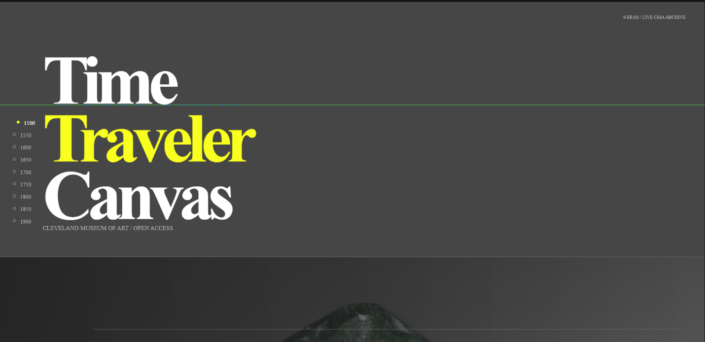
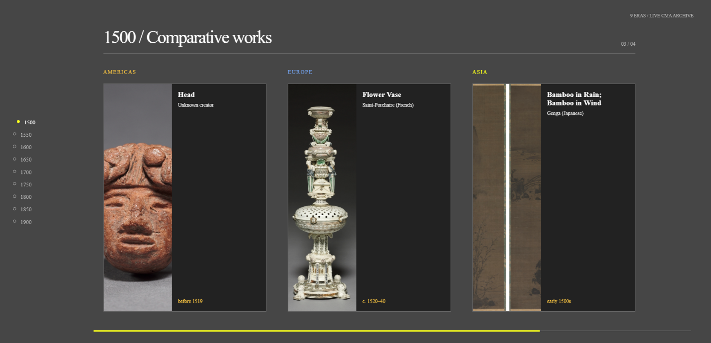
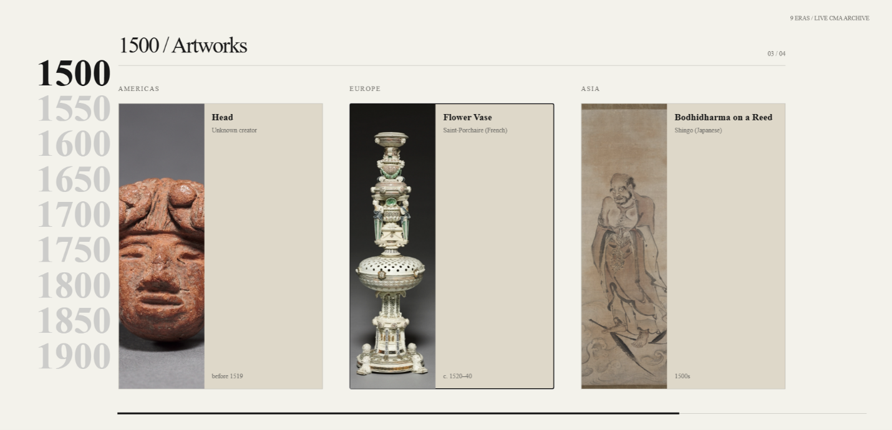
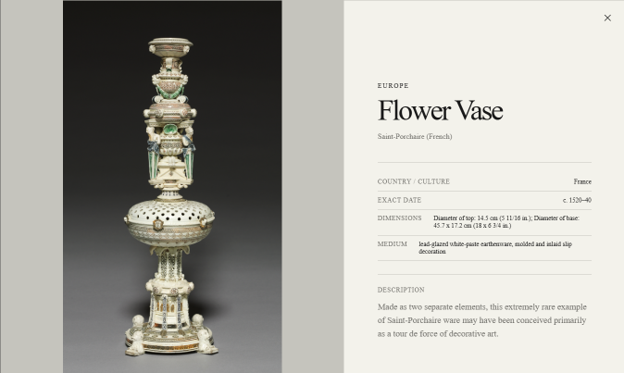

This week, I explored open-source artwork collections provided freely by museums. To get inspired, I spent some time researching existing projects, which led me to brainstorm three ideas:
I preferred the time traveler ideas because I find it the most interesting out of all 3. After deciding the idea, I had to search through different collections to find the most suitable one for the project. I encountered several museum APIs like The Metropolitan Museum of Art (Met), Art Institute of Chicago (AIC) and Cleveland Museum of Art (CMA).
The problem with the Met API is that its search endpoint returns only the objects IDs of the artworks:
You can notice there is no title, region, date or image. To retrieve this information, the application must send separate requests for each Object ID (/object/437133). Therefore, retrieving 5 artworks requires 6 requests, one for the search request and five additional requests to obtain their individual metadata and images. As the application retrieves more artworks, the number of HTTP requests increases, which can increase loading time and make the application more complex.
Unlike the Met API, the AIC API returns the artwork metadata directly within the search response, so the application does not need to make an additional request for every artwork but AIC provides an image_id rather than a direct image URL, requiring the application to construct a IIIF image URL for each artwork.
The CMA API solves the problems with AIC and Met API, since it provides artwork metadata and image information within the response to the request, reducing the number of additional requests and implementation steps required, which makes it the most suitable of the three API collections.
To build this, I remembered an animation website project I did previously and decided to fork it. The initial coloring and design were a bit too dark, so I looked for inspiration on DNEG, which was nominated for an Awwward (like the Oscars of web design).


To make the site easy to compare different continents, I put the art cards alongside each other showing the title and author. If users want more information about the artwork, they can click on the art card to read the exact country, exact date, dimensions, medium, description and a high-resolution image of the artwork. I also added a year slider on the side so users can freely navigate eras, along with a tracker at the bottom showing how many slides are left for that era.


This is the link for the website: Globel Art Across Eras